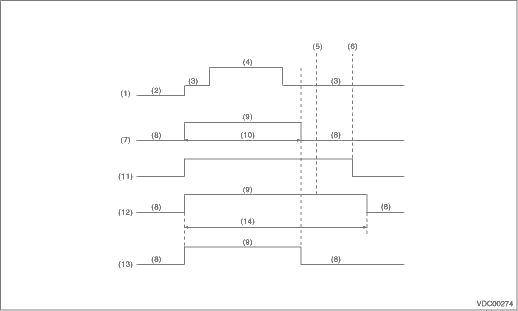

|
(1) |
Ignition switch |
(6) |
Parking brake released |
(11) |
Brake warning light (EBD warning light) |
|
(2) |
OFF |
(7) |
ABS warning light |
(12) |
VDC warning light/VDC OFF indicator light |
|
(3) |
ON |
(8) |
Light OFF |
(13) |
VDC indicator light |
|
(4) |
Engine start |
(9) |
Light ON |
(14) |
Few seconds (Depends on the coolant temperature) |
|
(5) |
Engine start |
(10) |
Approx. 2 sec. |
1. When warning lights or indicator lights do not illuminate in accordance with this illumination pattern, there must be an electrical malfunction.
2. When warning lights or indicator lights remain constantly OFF, repair or diagnose the warning light or indicator light circuits. 
NOTE:
• Even though the ABS warning light does not go out approx. after 2 seconds from ABS warning light illumination, the ABS system operates normally when the warning light goes out while driving at approximately 14 km/h (8.7 MPH). However, the ABS does not work while the ABS warning light is illuminated.
• If the vehicle has been standing for some time in a low temperature area, there are instances in which the VDC warning light/VDC OFF indicator light will take several minutes to turn off. This is due to the low engine coolant temperature, and is not a malfunction.
• If one wheel is locked, or turns freely, a change is generated in the drive transmission to the other wheels. The status of the change in drive differs from what occurs during normal operation. This status is detected by the ABS wheel speed sensor. The ABS and VDC warning lights will illuminate. When the vehicle is operated while all four wheels are lifted off the ground, or the four wheels are placed on rollers, the VDCCM sometimes detects a problem in the speed sensor, and the ABS and VDC warning lights illuminate. In this case, this is not a malfunction. Erase the DTC from the memory.